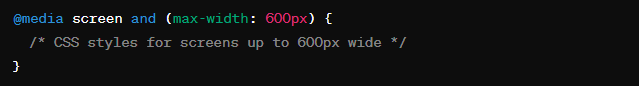

In the ever-evolving landscape of web development, the importance of creating websites that adapt seamlessly across various devices cannot be overstated. With the proliferation of smartphones, tablets, and laptops of various screen sizes, it's crucial for websites to be responsive, ensuring optimal user experience regardless of the device being used. One of the fundamental tools in achieving responsive design is CSS media queries.
CSS media queries are a powerful feature that allows developers to apply different styles to a website based on characteristics of the user's device, such as screen size, orientation, and resolution. Essentially, media queries enable the design to respond dynamically to the user's environment.
Media queries consist of a media type and one or more expressions that check for certain conditions to be met. The most common media type is 'screen,' which targets devices with screens, but others like 'print' or 'speech' can also be used. Expressions typically include parameters like width, height, orientation, and resolution.
For instance, a basic media query targeting devices with a maximum width of 600 pixels would look like this:
Within the curly braces, developers can define specific styles tailored to smaller screens, such as adjusting font sizes, rearranging layout elements, or hiding certain content altogether.
The true power of media queries lies in their ability to create fluid and adaptable layouts. By crafting stylesheets that respond to various screen sizes, developers can ensure that their websites look polished and function smoothly across a spectrum of devices.
For example, a website's layout might shift from a multi-column grid on larger screens to a single-column layout on mobile devices, improving readability and usability on smaller screens.
While media queries offer great flexibility, it's essential to use them judiciously and follow best practices:
CSS media queries are a cornerstone of responsive web design, empowering developers to create websites that adapt beautifully to the diverse array of devices used to access them. By leveraging media queries effectively, developers can craft engaging and user-friendly experiences that seamlessly scale across screens of all sizes. Embrace the power of media queries, and unlock the full potential of responsive design for your next web project.
You can contact me on